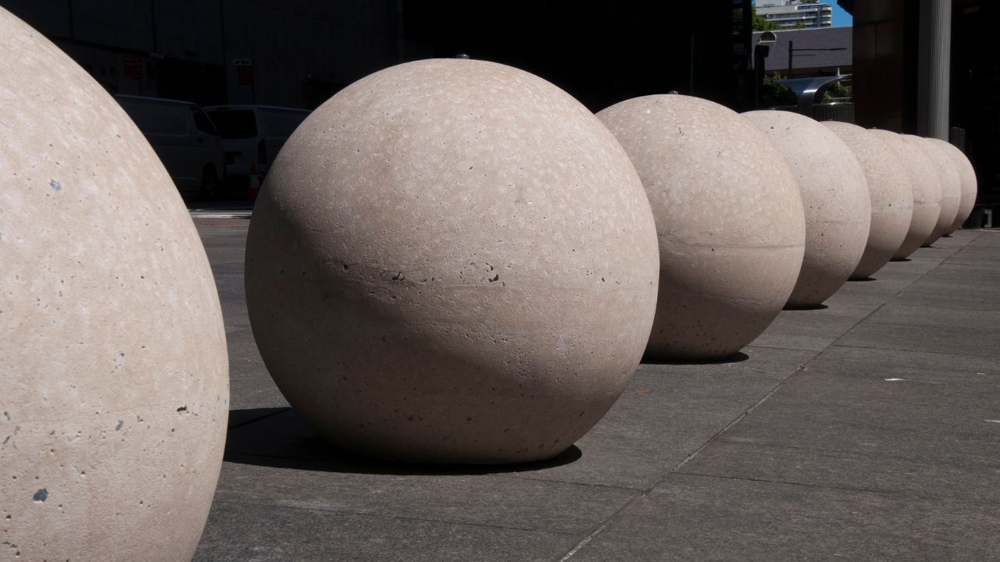
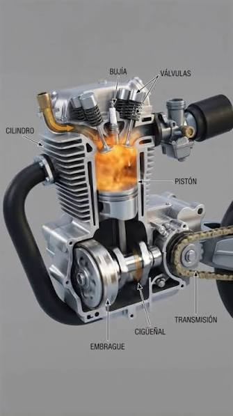

Uma praça será enfeitada por bolas de concreto com cerca de 2 metros de altura, para isso precisará de concreto para fazer 5 bolas desta. Qual a quantidade de concreto será necessário?

Um vendedor de cone (doce chocolate dentro) precisa saber a quantidade de chocolate comprar para fazer 50 cones. Sabendo que os cones tem 12cm de altura e 2,5cm de raio da base, qual a quantidade de chocolate
ele precisará comprar?
Uma motocicleta tem a parte funcional do motor em formato cilindrico, assim o seu curso(alturas) 63mm e seu pistão tem diâmetro igual 57mm. Qual a potência em cilindradas desta moto?

Uma garrafinha de água térmica tem a seguintes medidas, diametro de 7cm e altura de 20cm. Qual a quantidade de água cabe nesta térmica?